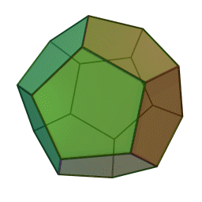
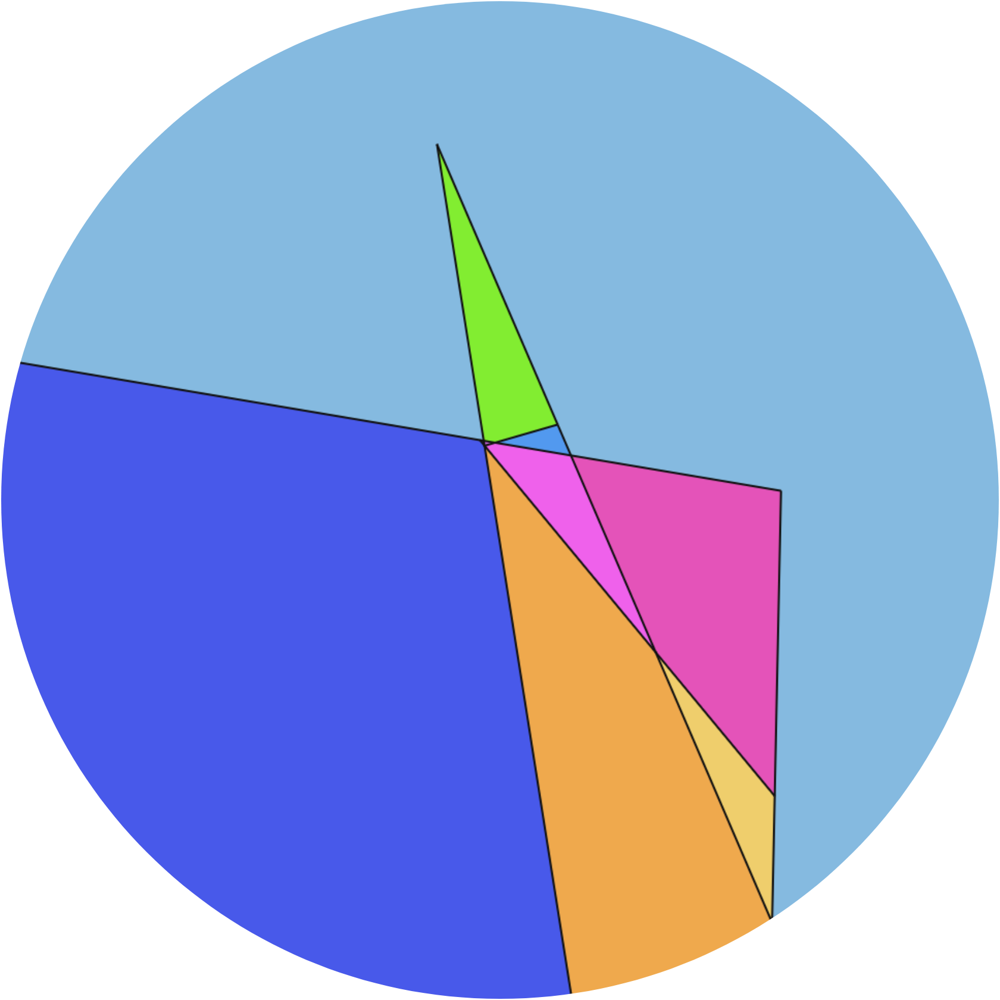

Papers
Research publications
The Hausdorff distance and metrics on toric singularity types (with A. Aitokhuehi, B. Braiman, T. Darvas, M. Deaton, P. Gupta, J. Horsley, V. Pidaparthy, J. Tang), Bull. Sci. Math. 204 (2025), art. 103714, arXiv:2411.11246
We consider a construction that assigns to a convex body $G$ a quasimetric $d_G$, and we give estimates comparing $d_G$ to the Hausdorff distance.

Intrinsic metrics from valuations on convex bodies (with M. Deaton), in preparation
To any valuation on convex bodies, we associate a pseudometric. Under broad conditions, it is a metric, and we study its metric geometry and topology.

Manuscripts, other papers, etc.
Cutting a pancake using an exotic knife (with N. Sloane), preprint, arXiv:2511.15864, featured in NY Times
We consider some generalizations of the lazy caterer’s problem, along with the pertinent combinatorics and experimental mathematics.

Talks
Hölder estimates for the Hausdorff distance and a quasimetric , AMS–MAA–SIAM Special Session on Research in Mathematics by Undergraduates, Joint Mathematics Meetings, Jan. 2025 [ PDF ]
Manifolds, mixed volumes, and a quasimetric, Tufts Math Monday Meeting, Oct. 2024
Counterexamples in measure, Tufts Math Monday Meeting, Mar. 2024
Metric geometry of convex bodies, Tufts Math Monday Meeting, Oct. 2025
(Near-)metrics arising from valuations on convex bodies, BUGCAT 2025, Nov. 2025
Alternative geometries on the space of convex bodies, Contributed Session on Research by Undergraduates, Joint Mathematics Meetings, Jan. 2026
Valuations and integral geometry, Tufts Math Monday Meeting, Apr. 2026